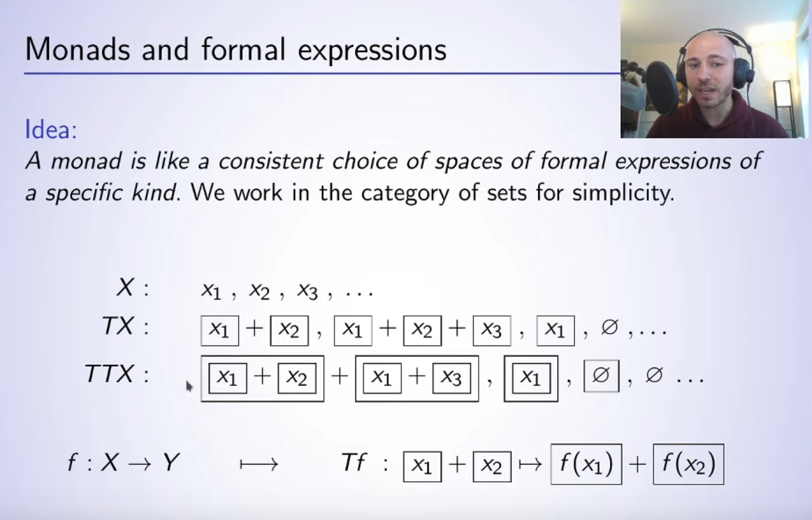
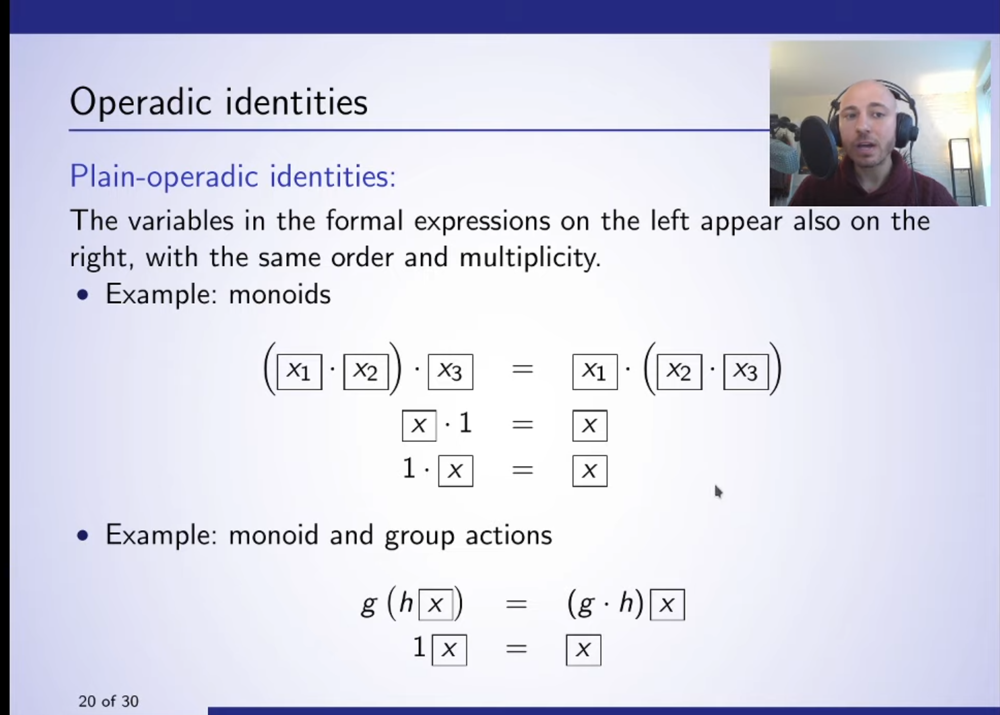

"Composing Partial Evaluations"
2020-03-19
Paolo Perrone was nice enough to live stream their category theory seminar on YouTube. It's really cool to be able to watch this sort of thing online to get a sense of what people are up to.
TBH I was expecting something a little more applied, because when I think of partial eval, I am thinking of the world of using it as a tool for programmers, not as a formal mathematical system to be studied. So most of it went over my head, but I did pick up some interesting intuitions, not sure if they are right.
The first was just in the beginning, the explanation of monads, as ways to box objects, and then have some operations on how to deal with these boxed things without being able to see inside of them.

The second was a lot more fuzzy, but basically that this work is about exploring how knowing more things about the objects you are dealing with can help you understand identity.

If you want to know "Are these two things equals?" Then you can build up larger rules of equivalence based on the rules underlying rules. I am trying to situate this work with respect to term rewriting systems and SMT solvers. Basically, as an end user, if you want to deal with objects like "natural numbers", "sets", or "arrays" you likely want some of the replacements that happen with them to be not uni directional. I mean that for some structures, there might not be a simplest form ....